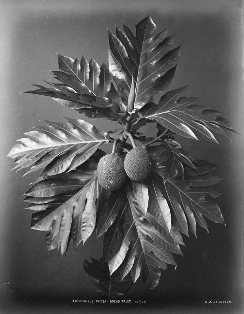
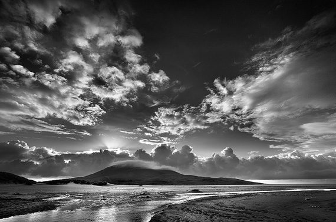
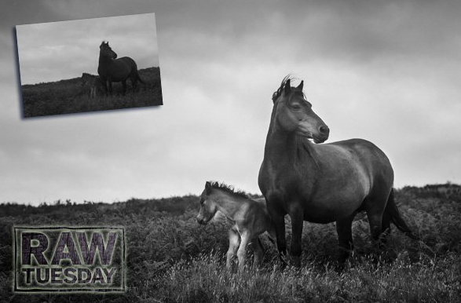

Monochrome Photography means

Monochrome photography is photography where each position on an image can record and show a different amount of light, but not a different hue. It includes all forms of black-and-white photography, which produce images containing tones of neutral grey ranging from black to white. Other hues besides grey, such as sepia, cyan or brown can also be used in monochrome photography.In the contemporary world, monochrome photography is mostly used for artistic purposes and certain technical imaging applications, rather than for visually accurate reproduction of scenes.
Introduction
Originally, all photography was monochrome, or black-and-white. Even after color film was readily available, black-and-white photography continued to dominate for decades, due to its lower cost and its "classic" photographic look. The tones and contrast between light and dark areas define black-and-white photography. It is important to note that monochromatic pictures are not necessarily composed of pure blacks, whites, and intermediate shades of gray but can involve shades of one particular hue depending on the process. The cyanotypeprocess, for example, produces an image composed of blue tones. The albumen print process first used more than 170 years ago, produces brownish tones.
Many photographers continue to produce some monochrome images, sometimes because of the established archival permanence of well-processed silver-halide-based materials. Some full-color digital images are processed using a variety of techniques to create black-and-white results, and some manufacturers produce digital cameras that exclusively shoot monochrome. Monochrome printing or electronic display can be used to salvage certain photographs taken in color which are unsatisfactory in their original form; sometimes when presented as black-and-white or single-color-toned images they are found to be more effective. Although color photography has long predominated, monochrome images are still produced, mostly for artistic reasons. Almost all digital cameras have an option to shoot in monochrome, and almost all image editing software can combine or selectively discard RGB color channels to produce a monochrome image from one shot in color.
Description

Most modern black-and-white films, called panchromatic films, record the entire visible spectrum. Some films are orthochromatic, recording visible light wavelengths shorter than 590 nanometers, in the blue to green range of the spectrum and are less sensitive to the longer wavelength range (i.e. orange-red) of the visible spectrum. Black-and-white photography is considered by some to be more subtle and interpretive, and less realistic than color photography. Monochrome images are not direct renditions of their subjects, but are abstractions from reality, representing colors in shades of grey. In computer terms, this is often called greyscale. Black-and-white photography is considered by some to add a more emotional touch to the subject, compared with the original colored photography.
Sepia and brown hued images are produced by certain photographic processes such as calotypes and albumen prints, or by the use of toningsolutions which convert silver in the image to silver sulphide, imparting the brown or sepia tone. Selenium toner produces a blue-black or purple image, similarly by converting silver into more stable silver selenide. Cyanotypes used iron salts rather than silver salts to create blue and white hued images.
Monochrome images may be produced in a number of ways. Finding and capturing a scene having only variants of a certain hue, while difficult and uncommon in practice, will result in an image that technically qualifies as a monochrome photo. One can also artificially limit the range of color in a photo to those within a certain hue by using black-and-white filmor paper, or by manipulating color images using computer software.
Color images can be converted to black and white on the computer using several methods, including desaturating the existing color RGB image so that no color remains visible (which still allows color channels to be manipulated to alter tones such as darkening a blue sky, or by converting the image to a greyscale version (which eliminates the colors permanently), using software programs like Photoshop. After software conversion to a monochrome image, one or more hues can replace the grey tones to emulate duotones, sepia, selenium or gold toned images or cyanotype, calotype or albumen prints.
Black And White Photography Tips
1. Shoot RAW + JPEG
The best monochrome conversions are made by editing raw files which have the full colour information, but if you shoot raw and JPEG files simultaneously and set the camera to its monochrome Picture Style/Picture Control/Film Simulation mode you get an indication of how the image will look in black and white.As many photographers struggle to visualise a scene in black and white, these monochrome modes are an invaluable tool that will help with composition and scene assessment.

Many cameras are also capable of producing decent in-camera monochrome images these days and it’s worth experimenting with image parameters (usually contrast, sharpness, filter effects and toning) to find a look that you like.
Because compact system cameras and compact cameras show the scene seen by the sensor with camera settings applied, users of these cameras are able to preview the monochrome image in the electronic viewfinder or on rear screen before taking the shot.
DSLR users can also do this if they activate their camera’s live view system, but the usually slower responses mean that many will find it preferable or check the image on the screen post-capture.
2. Look for Contrast, Shape and Texture
The complimentary and opposing colours that bring a colour image to life are all reduced to black and white or shades of grey in a monochrome image and you have to look for tonal contrast to make a shot stand out. 
In colour photography, for example, your eye would immediately be drawn to a red object on a green background, but in monochrome photography these two areas are likely to have the same brightness, so the image looks flat and dull straight from the camera.
Fortunately, it’s possible to work adjust the brightness of these two colours separately to introduce some contrast. However, a good starting point is to look for scenes with tonal contrast.
There are always exceptions, but as a general rule look for scenes that contain some strong blacks and whites.
This can be achieved by the light or by the brightness (or tone) of the objects in the scene as well as the exposure settings that you use. The brightness of the bark of a silver birch tree for example, could inject some contrast (and interest) in to a woodland scene.
Setting the exposure for these brighter areas also makes the shadows darker, so the highlights stand out even more. Look for shapes, patterns and textures in a scene and move around to find the best composition.
3. Try Long Exposure
Long exposure shots can work really well in monochrome photography, especially where there’s moving water or clouds. 
During the exposure the highlights of the water, for example, are recorded across a wider area than they would with a short exposure and this can help enhance tonal contrast.
The blurring of the movement also adds textural contrast with any solid objects in the frame. If necessary, use a neutral density filter such as Lee Filters’ Big Stopper or Little Stopper to reduce exposure and extend shutter speed (by 10 and 4 stops respectively).
Naturally, when exposures extend beyond about 1/60 sec a tripod is required to keep the camera still and avoid blurring. It’s also advisable to use a remote release and mirror lock-up to minimise vibration and produce super-sharp images.
4. Use Filters
Graduated neutral density (AKA ND grad) and polarizing filters are just as useful in monochrome photography as they are in colour. In fact, because they manipulate image contrast they are arguably more useful. 
An ND grad is helpful when you want to retain detail in a bright sky while a polarizing filter can be used to reduce reflections and boost contrast. Alternatively, consider taking two or more shots with different exposures to create a high dynamic range (HDR) composite.
Don’t be afraid to use a ND grad with a standard neural density filter if the sky is brighter than the foreground in a long exposure shot. Coloured filters, which are an essential tool for monochrome film photographers, can also be useful for manipulating contrast in digital images. They work by darkening objects of their opposite colour while lightening objects of their own. An orange filter, for example, will darken the blue of the sky while a green one will lighten foliage.
5. Take Control
Although coloured filters can still be used to manipulate contrast when shooting digital black and white images, it’s more common to save this work until the processing stage. 
Until a few years ago Photoshop’s Channel Mixer was the preferred means of turning colour images monochrome, but now Adobe Camera Raw has more powerful tools (in the HSL/Grayscale tab) that allow you to adjust the brightness of eight individual colours that make up the image. It’s possible to adjust one of these colours to make it anything from white to black with the sliding control.
However, it’s important to keep an eye on the whole image when adjusting a particular colour as subtle gradations can become unnatural looking. And adjusting the brightness of a red or pink shirt with the red sliding control, for instance, will have an impact on the model’s skin, especially the lips. The Levels and Curves controls can also be used to manipulate tonal range and contrast, but the HSL/Grayscale controls allow you to create separation between objects of the same brightness but with different colours.
6. Dodge and Burn
Dodging and burning is a technique that comes from the traditional darkroom and is usually used to burn in or darken highlights and hold back (brighten) shadows. 
Photoshop’s Dodge and Burn tools allow a level of control that film photographers could only dream of because you can target the highlights, shadows or mid-tones with both. This means that you can use the Burn tool to darken highlights when they are too bright, or the Dodge tool to brighten them to increase local contrast. It’s a great way of giving a sense of greater sharpness and enhancing texture.
Plus, because you can set the opacity of the tools, you can build up their effect gradually so the impact is subtle and there are no hard edges.
The Power of Black and White Photography
These days, smart digital cameras do the work for photographers. Unlike in old times, people can easily get high resolution colored images. Shooting in color has become the norm in photography. But despite the wide usage of colored images, most people still love black and white pictures. And however strange it may seem, but up to this date, black and white pictures are still a hit! People are often surprised at the power that black and white images have. 
So, what are the advantages of black and white photography?
• Sometimes, colors can be distracting and may even make the photo look complicated. It can be hard to focus on the subject because of too much color. But when it comes to black and white photography, the subject is much easier to focus on. • Black and white keeps you focused on the actual composition and texture of the photo. It allows you to focus on shapes, light and shadows, lines and perspective. That is why some photos look definitely more convincing in black and white.
• Black and white photos have a classy and exquisite feel about them. They have an aesthetic, artistic look that is hard to produce in color. They definitely look timeless! In the times of digital technology, most photographers prefer desaturating their images in post-processing, instead of shooting in black and white mode. Pho.to offers you lots of opportunities to turn your pictures into beautiful black and white photos. Are you interested? Then read further! The simplest thing is desaturating your image, or turning it to sepia (creating a sepia tone effect). To desaturate an image, upload it to Editor.Pho.to, find the ‘Artistic effects’ section and use the ‘Black & White Photo’ or the ‘Sepia’ tool.

More sophisticated black and white effects can be found at Funny.Pho.to. Black and white photos are often associated with retro style. They remind of the old times when people used black-and-white film cameras. Try the ‘Old Style BW’ and ‘Old Photo’ effects and go back to the times of film photography!

The vintage feel that black and white pictures have about them can be further enhanced with grunge style and textures. Apply the ‘Grunge Photo’ effect and feel the magic of black and white photography!

Want to play on the contrast between colored and black and white pictures? Use the ‘Color and BW photo‘ template to make a creative collage from 4 pictures (one of them will be turned to black and white, the three others will remain in color):

Have you ever seen black and white charcoal drawings? They always look very impressive. You are not much of an artist? Don’t be upset. You can turn your photo into a charcoal drawing with a click of your mouse! Just apply the ‘Charcoal’ filter to it.

Benefits Of Black And White Photography
Black and White(or other monochromatic) photography can and does have its place in commercial photographysettings. Black and white photos show off the texture and contrasts – lights and darks – of the subject much more clearly than color images ever can. So, if you want to show these aspects more than the subject itself, black and white is your answer. Black and white, and sepia-toned photography too, can appear more timeless, more classic. We tend to associate it with days gone by, and perhaps even with bygone glamour and/or innocence. Does your business have a classic, timeless feel? Then black and white may be the answer for you. What about your background? With print materials, your background probably doesn’t matter as much, but with online properties and platforms, backgrounds can be very busy and colorful. Black and white photography may make your images stand out and be more visible. And let’s talk about emotions for a moment. Black and white photography can, as we said, evoke a sense of nostalgia. It can also convey sadness or seriousness, too. If you’re covering a life-or-death seriousness type of subject, or a tragic sadness, then black and white images may be better suited to your purposes. Black and white photography is also considered by many to be more “artsy” than using color.

Ever since the first monochromatic daguerreotypes came out in the 1800s, photographers have been experimenting with color in one way or another. The advent of true color captures not only came about through all their tinkering and experimenting, but it also brought about the choice – to go color or not. In this day and age of digital photography, many might wonder if the choice is even worth discussing, as we can now capture colors more clearly and accurately than ever before. Let’s look at the answers and let you decide for yourself.
3 Reasons for working in black and white
1. To capture character
Many street and travel photographers, street photographers especially, chose to work in black and white. If your aim is to make a candid portrait that captures something of the person’s character or soul, then black and white is an excellent choice. There is something timeless about black and white that helps reveal character.
That’s why I shot the following photo in black and white.

2. To simplify the composition
Black and white is a form of simplification. Skilled street photographers learn to create images that are uncluttered and that contain as few distractions as possible. Color can be extremely distracting, and sometimes it’s easier to ignore color completely and work in black and white.
For example, let’s say you make a portrait of somebody on the street, but there is a red poster on a wall behind them. In a color photo, that’s likely to be very distracting. But convert it to black and white and the distraction goes away. The viewer’s attention goes back to the person, where it belongs.
If you are working in an area with lots of potentially distracting colors, working in black and white may be the way to go. For example, this scene in Bolivia was quite colorful, and I felt that black and white removed the distractions of those colors.

3. To evoke atmosphere
Color photos can be tremendously evocative, but so can black and white ones. I think it’s because a black and white image leaves something for the imagination, or perhaps because we associate it with photos taken in the past. So, if you are working somewhere with lots of old buildings, then black and white photos can be a tremendously moody way of capturing the atmosphere of that place.
I chose black and white for this photo, taken in the Argentina, because the stirrup is handmade, and looks ancient, as if it were made many years ago.

Black and white photography: See in tones
Our eyes see in colour but to be successful in black and white photography it’s important to train them to see the world as tones of grey.
A red flower in a green field may look great in colour, but when converted to mono, if those colours reproduce as the same shade of grey the result will be a very dull picture.
It takes time to develop an eye for mono. One way to help it along involves taking a photographic grey card out and comparing it with objects you encounter. Ask yourself, would that colour be lighter or darker than the grey card?The best black and white photography exploits the differences in tone between elements in a scene, which can either be photographed ‘straight’ or manipulated either by using on-camera filters, or Photoshop. Great black and white photos also make good use of shapes, textures, lines and lighting, to compensate for the loss of colour.
Black and white photography: Atmosphere

Fog, mist and haze all have the potential to lower subject contrast and create a soft, romantic feel to an image.
When it’s misty or foggy out, the world is almost transformed into a naturally monochrome wilderness populated with enchanting tones and an eerie stillness. Bearing this in mind, why not get out and about next time a mist rolls in off the sea or a fog settles for the evening? Remember that objects and features closer to the lens will tend to show heavier tones than elements that are further away, so bear this in mind when composing your shot.
Black and white photography: The classic subjects
Paring down the image to a range of simple tones often leads to a purer rendition.
The classic subjects for mono treatment include documentary, landscape and portraiture.
Travel photography lends itself to a documentary approach rather than just a record of tourist attractions.
Alternatively choose a subject close to where you live, and remember to visit often and shoot plenty so that you can build up a story over time.
Portraits often look stronger in black and white because, without the distraction of colour, the emphasis is on character, expression, and revealing ‘the soul’ of the subject.
When reducing landscapes to monochromatic tones the composition becomes more important than ever. Make the most of your foreground, remember to include a focal point, and use leading lines and graphic shapes where possible. Monochrome can make a brooding feature out of an overcast sky so it’s a good way to go when the weather is against you.
Black and white photography: Create contrast

Tonal contrast is important in all types of photography, but especially in black and white photography. Whether a low contrast image a high one the contrast level can have a profound effect on the mood and atmosphere.
A natural way to add contrast to your image is through choice of subject. Even if the lighting is dull, a well-chosen muse will offer a striking tonal contradiction. For instance, a black sheep among a white flock will naturally be a source of contrast. The quality of the light and its direction are two other important factors that will influence the amount of contrast present in a scene.
Out of doors direct sunlight creates hard shadows that offer plenty of opportunity to create images with strong contrast.
You can influence the direction of the light by moving your position and shooting at certain times. Low angled light, for example, helps define form and makes for interesting shadows, so try shooting in the morning or late afternoon.
Black and white photography: Using in-camera black and white

Undoubtedly the speediest way to produce a black and white photo is to let your camera handle the conversion. Most DSLRs have a monochrome mode so it’s worth exploring this creative alternative.
You’ll need to use your camera’s menu system to access the processing parameters. Here, in addition to contrast and sharpness you can play around with coloured filters. Yellow or green can be good for skin tones, whereas red can cut through the haze in distant views.
Many models also boast funky toning effects – try sepia for a vintage feel, while blue can add a cool tint to an architectural scene. In-camera black and white, although the fastest method of conversion, offers the least flexibility. In particular, saving your image as a monochrome JPEG means that you won’t be able to access the separate RGB channels at a later stage should you wish to.
Therefore, if this is the case it may be prudent to save two versions – one as a JPEG that you can use then and there, and one as a RAW image, which can be processed later on if needs be.
Black and white photography: Shape and form

Concentrating on interesting shapes can be a great way of crafting a bolder image. To appreciate an object’s outline there needs to be tonal variation between subject and background. Reducing your focal point to a silhouette is a marvellously effective method to achieve this.
Base your exposure on the bright background, take an average reading, and be sure to select a foreground subject that is easily recognised.
Understanding the impact of form on your final image is also useful for black and white phtoography. For example, having the sun at your back certainly ensures even illumination, but sadly produces an image that often looks flat.
However, simply adjusting your relationship to the light can have a great improvement. Moving to an angle of between 45° and 90° will give a heightened sense of volume by placing useful shadows on the far side of your subject.
Black and white photography: Patterns and textures

Following on with the concept of contrast, have a hunt for striking patterns and textures. One way that you can make a study of patterns is by keeping an eye out for recurring themes. Looking at architecture and public structures should yield some promising subjects.
Consider using a telephoto lens to ‘stack up’ the image elements one on top of the other.
A large aperture can be useful here to help to pick out one plane in particular and thereby establish a focal point. In order to avoid camera shake when handholding, ensure that the shutter speed equals the focal length. Alternatively, gain access to longer shutter speeds by using a tripod.
Alternatively to, or in fact concurrently with, textures, many objects and surfaces have interesting textures which lend themselves to black and white. However, without the right kind of lighting this can go unnoticed. Imagine for a moment the surface of the moon. The craters nearest the terminator are the easiest to distinguish because sunlight is striking them obliquely creating highlights right alongside strong shadows. Scale this down and the same kind of harsh, slanting light can be just what’s needed for bringing out texture. Use direct flash or a spotlight and position it low and to one side. Effective lighting really is the key to revealing texture.
Start Quiz